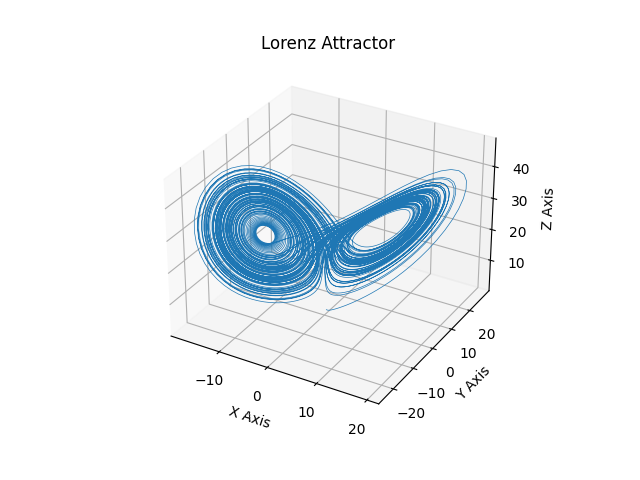

GOSS - General ODE System Solver
goss
GOSS - General ODE System Solver¶
Henrik Finsberg
Computational Physiology meeting 27.04.2022
Outline¶
What is
gossBasic usage (as an ODE solver)
Advanced usage (solving several ODEs simultaneously)
Components in
gossSoftware development
goss is a library for solving system of ordinary differential equations
where
\(\mathbf{x}\) is a vector of state variables
\(t\) is the time
\(\mathbf{p}\) is a vector of parameters
\(f\) is a function describing the evolution of the system
Install with
python -m pip install pygoss
(you don’t need to run CMake or make, but you need to have boost installed)
Example the Lorentz attractor¶
\begin{align*} \frac{dx}{dt} &= \sigma (y - x) \ \frac{dy}{dt} &= x (\rho - z) - y \ \frac{dz}{dt} &= x y - \beta z \end{align*}
with
\(\mathbf{x} = (x, y, z)\)
\(\mathbf{p} = (\sigma, \rho, \beta)\)
Example the Lorentz attractor¶
\(\mathbf{x}_0 = (1.0, 2.0, 3.05)\)
\(\mathbf{p} = (12.0, 21.0, 2.4)\)

Defining your ODE in a gotran .ode file called lorentz.ode¶
parameters(
sigma=12.0,
rho=21.0,
beta=2.4
)
states(
x=1.0,
y=2.0,
z=3.05
)
dx_dt = sigma * (y - x)
dy_dt = x * (rho - z) - y
dz_dt = x * y - beta * z
Load file in gotran¶
from gotran import load_ode
lorentz = load_ode("lorentz.ode")
Next we jit-compile the ODE into goss
import goss
ode = goss.ParameterizedODE(lorentz)
We can update the parameters using the set_parameter method
ode.set_parameter("sigma", 10.0)
ode.set_parameter("rho", 28.0)
ode.set_parameter("beta", 8 / 3)
Solve the ODE¶
We can now instantiate the solver and select the time steps
solver = goss.solvers.RKF32(ode)
t = np.linspace(0, 100, 10001)
And solve the system
u = solver.solve(t)
We can also provide different initial conditions to the solver
ic = np.array([0.0, 1.0, 1.05])
u = solver.solve(t, y0=ic)

Solving the Tentusscher model¶
Model is available at CellML
Download model and convert
git clone https://models.physiomeproject.org/workspace/tentusscher_panfilov_2006 cd tentusscher_panfilov_2006
Convert
.cellmlfile to.odepython -m gotran cellml2gotran ten_tusscher_model_2006_IK1Ko_M_units.cellml
Use command line interface for solving the Tentusscher model¶
goss run --help
Example
goss run -T 1000 --solver GRL1 -dt 0.01 --plot-y V --plot-y Ca_i tentusscher_panfilov_2006_M_cell.ode


Solving the Tentusscher model for different parameters¶
Simulate a drug that blocks one or two channels in the cells. We will block the CaL- and the Kr-channel with 0%, 20% and 40%
field_parameters = ["g_CaL", "g_Kr"]
We want to keep track of the voltage and intracellular calcium for these all the different parameter sets
field_state_names = ["V", "Ca_i"]
We supply these additional arguments to the ParameterizedODE class
ode = goss.ParameterizedODE(
load_ode("tentusscher_panfilov_2006_M_cell.ode"),
field_states=field_state_names,
field_parameters=field_parameters,
)
Solving the Tentusscher model for different parameters¶
We use the first order generalized rush larsen scheme and set an internal step size of 0.01
solver = goss.solvers.GRL1()
solver.internal_time_step = 0.01
We will run 9 different parameter sets so we set the number of nodes to 9 and instantiate the ODESystemSolver
num_nodes = 9
system = goss.ODESystemSolver(num_nodes, solver, ode)
Solving the Tentusscher model for different parameters¶
Now, let us pick three block factors (1 representing baseline)
block_factors = np.array([1, 0.8, 0.6])
and update the field parameters
field_parameters = system.field_parameters
# Block only CaL
field_parameters[:3, 0] *= block_factors
# Block only Kr
field_parameters[3:6, 1] *= block_factors
# Block both
field_parameters[6:9, 0] *= block_factors
field_parameters[6:9, 1] *= block_factors
Solving the Tentusscher model for different parameters¶
Let us fist run the forward model for 50 000 ms
T = 50_000
system.forward(0, T)
And the run it for 1000 ms where we keep track of the field states
tstop = 1000.0
dt = 1.0
time_stamps = np.arange(T, T + tstop, dt)
field_states = system.solve(time_stamps)
Solving the Tentusscher model for different parameters¶
Note that calls to system.forward and sytem.solve runs in parallel using OpenMP

Using goss with cbcbeat to solve the bi- or monodomain equations¶
from cbcbeat.gossplittingsolver import GOSSplittingSolver
heart = cbcbeat.CardiacModel(mesh, time, M_i, M_e, cellmodel, stimulus)
solver = GOSSplittingSolver(heart)
# Traditional way
# solver = cbcbeat.SplittingSolver(heart)
Thanks to Cécile
Our benchmarks shows that the GOSSplittingSolver is about 10% faster than the traditional PointIntegralSolver, but profiling remains to be done

Software development¶
Local development
pre-commit hooks
Testing
python
C++
Continuos integration
pre-commit.ci
Documentation
Continuos deployment on new tag
Publishing to pypi
Publishing docker image
Pre-commit hooks will run every time you commit¶
A good way to make sure you are not committing “bad code”
Code that doesn’t follow the coding style
If you are working with others then you will force everyone to use the same code style
That way you will not reformat all the code in every commit (for example if one is using tabs and the other is using spaces for indentation)

Testing (C++)¶
There is a test suite for the C++ code that uses Google test
Written by Johan Hake (the original creator of
goss)